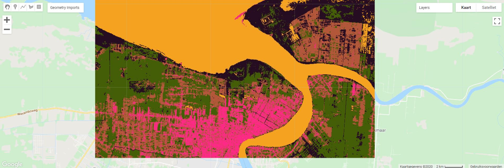

Niet-gesuperviseerde classificatie
Niet-gesuperviseerde classificatie is de procedure waarbij pixel worden ingedeeld volgens spectraal gelijkende klassen zonder dat hierbij trainingsklassen nodig zijn. De resulterende klassen worden dan ook spectrale klassen genoemd.
Het is aan de gebruiker om de resulterende klassen te interpreteren en te labelen.
Er bestaan verschillende niet-gesuperviseerde algoritmen, maar de meest gekende groep is deze van de clustering. In een clusteranalyse worden pixels met gelijkende spectrale kenmerken tot dezelfde klasse gerekend.
K-Means Clustering
Een van de meest gebruikte cluster-algoritmen is de "K-means" clustering, waarbij de gebruiker op voorhand een aantal beginclusters opgeeft waarmee het algoritme arbitrair dat aantal clusters in de multi-dimensionale ruimte. Elke pixel wordt dan in een eerste fase toegekend tot de cluster waar die pixels zich gemiddeld het dichtst bij bevindt. Na deze eerste 'run' worden de clusters herberekend, waarbij de variantie binnen elke cluster wordt geminimaliseerd. Hierna worden de pixels opnieuw toegekend tot de 'best passende' cluster. Deze procedure wordt herhaald (iteraties) totdat er zich geen significante verplaatsing van de clustercentra meer voordoet en de variantie binnen elke cluster dus ook niet meer significant daalt.

Principe van de K-means clustering in een 2-dimensionaal vlak. (Bron: dashee87.github.io)
Classificatie van de Surinaamse kustzone
In Earth Engine zit de clustering ook vervat in ee.Clusterer. We maken in volgend voorbeeld gebruik van de weka k-means cluster.
-
Maak een nieuw script aan: P6_UnsupervisedClass.
-
Zoals steeds filteren en reducen we een satellietbeeld, om met een wolkenvrije
imageverder te kunnen werken. We focussen ons in dit voorbeeld op de kustlijn van Suriname, ter hoogte van de hoofdstad: Paramaribo. We focussen hierbij op maanden binnen de grote droge tijd (Augustus - December), aangezien de wolkbedekking dan beperkter zou moeten zijn in vergelijking met de natte tijden.
Maak hiervoor eerst een polygoon aan met de locatie van Paramaribo. Eventueel kun je hiervoor onderstaande code gebruiken:
var Paramaribo =
/* color: #d63000 */
/* shown: false */
/* displayProperties: [
{
"type": "rectangle"
}
] */
ee.Geometry.Polygon(
[[[-55.31615692285674, 6.000339363352038],
[-55.31615692285674, 5.8043169248564865],
[-54.91446930078643, 5.8043169248564865],
[-54.91446930078643, 6.000339363352038]]], null, false);
Start Daarna met het aanmaken van het S2-beeld
// --------------------------------------------------------------------
// STAP 1 - Inladen en klaarzetten van S2-beeld. Mét extra cloud-masking
// -------------------------------------------------------------------
//Cloudprobability functie:
// Functie die nieuwe CloudProbability collectie samenvoegt met S2 (sen2cloudless)
// meer info: https://medium.com/sentinel-hub/cloud-masks-at-your-service-6e5b2cb2ce8a
var getS2_SR_CLOUD_PROBABILITY = function () {
var innerJoined = ee.Join.inner().apply({
primary: ee.ImageCollection("COPERNICUS/S2_SR"),
secondary: ee.ImageCollection("COPERNICUS/S2_CLOUD_PROBABILITY"),
condition: ee.Filter.equals({
leftField: 'system:index',
rightField: 'system:index'
})
});
var mergeImageBands = function (joinResult) {
return ee.Image(joinResult.get('primary'))
.addBands(joinResult.get('secondary'));
};
var newCollection = innerJoined.map(mergeImageBands);
return ee.ImageCollection(newCollection);
};
// Mask out clouds
var maskClouds = function(image) {
var cloudProbabilityThreshold = 40;
var cloudMask = image.select('probability').lt(cloudProbabilityThreshold);
return image.updateMask(cloudMask);
};
//Aanmaken van een ImageCollection ter hoogte van de kustlijn met mangroves en de hoofdstad Paramaribo, Suriname
var S2_coll = getS2_SR_CLOUD_PROBABILITY()
.filterDate('2019-08-01','2019-10-30')// Filteren voor het jaar 2020, droge tijd
.filterMetadata('CLOUDY_PIXEL_PERCENTAGE','less_than',50) //Voorselectie obv wolken
.map(maskClouds) //toepassen van de cloudmaskfunctie
.filterBounds(Paramaribo); //collectie filteren obv de Kustzonegeometrie
//Omzetten collectie naar een Image, door de.median() reducer toe te passen. Hierna clippen we ook tot onze ROI
var S2_im = S2_coll.median()
.clip(Paramaribo) //Bekijk de .clip-eigenschappen in de Docs
De .clip() functie
De .clip()-functie wordt toegepast om het resulterende beeld bij te snijden naar de exacte grenzen van de aangemaakte polygoon (ROI). .clip() is enkel toepasbaar op beelden van het image-type, maar kan niet worden toegepast op een ``ÌmageCollection, gezien dit een te grote rekencapaciteit zou vergen. Daarom wordt de functie.FilterBounds()```gebruikt, waarbij enkel gefilterd wordt op basis van een spatiaal feature (punt, lijn of polygoon) maar geen beelden worden bijgesneden.
-
De Earth Engine clusterer volgt het algoritme van Weka, een open-source machine learning softwarepakket. In dit algoritme worden eerst pixels uit het beeld 'gesampled', waarop het k-means algoritme wordt losgelaten. Eenmaal het algoritme op punt is, wordt het toegepast op de rest van het beeld. M.a.w. wordt er een niet-gesuperviseerd model getrained op een willekeurige sample van pixels, die representatief wordt geacht voor de rest van het beeld. Het aantal te sampelen pixels moet dus voldoende groot gekozen worden, maar indien het te groot wordt, zal earth engine een foutmelding geven:
clusters: Layer error: Computed value is too large.De maximale capaciteit van earth engine ligt bij ca. 1 miljoen pixels.// Aanmaken"training" dataset. var training = S2_im.sample({ region: Paramaribo, scale: 10, numPixels: 5000 }); -
Eenmaal de pixels geselecteerd zijn die gebruikt gaan worden voor het aanmaken van de k clusters, kan het 'K-means cluster-algoritme' worden getraind. Deze bevat enkele parameters die de gebruiker nog kan instellen:
-
nClusters: het eerste en het enige verplicht aan te geven argument dat het aantal gewenste clusters aangeeft.
-
init: de initialisatiemethode. Hiermee kan de manier waarop de initiële clustercentra worden gekozen. De default-instelling kiest ad random de beginpunten. Deze zullen we in deze oefening gebruiken.
-
distanceFuntion: welke afstandsberekening moet worden toegepast: Euclidisch of Manhattan. De euclidische afstand is default.
-
maxIterations: het maximale aantal iteraties, indien opgegeven. De clusteranalyse stopt na dit aantal iteraties.
-
// Clusterer opstellen en trainen. Opgeven van 5 klassen, de andere parameters laten we op default.
var Kmeans_cl = ee.Clusterer.wekaKMeans(5).train(training);
// Laat de cluster los op het volledige beeld
var classified = S2_im.cluster(Kmeans_cl);
.randomVisualizer().
// Display the clusters with random colors.
Map.addLayer(classified.randomVisualizer(), {}, 'clusters');

Voorbeeldresultaat van de K-means clustering.
Opdrachten
-
Interpreteer de bekomen klassen en tracht ze te linken aan landbedekkingsklassen. Gebruik hiervoor ook een Normale Kleuren, Valse Kleuren en 'Healthy Vegetation' (RGB = B8,B11,B2) composiet.
-
Herhaal bovenstaande clustering enkele keren, met onderstaande parameters. Vergelijk de resultaten ook steeds met elkaar:
-
Je het aantal clusters optrekt naar 10.
-
Je de parameter
maxIterationsbinen deee.ClustererwekaKMeans()functie toevoegd. Test de waarden 1, 10 en 30 -
Je de factor
numPixelsvergroot (naar bv 10000).
-